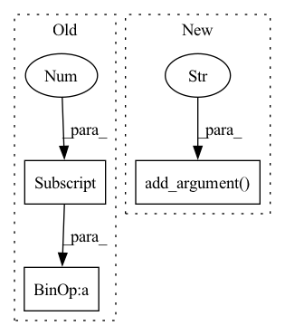

Pattern ID :18671

Before Change
print("\r Epoch [%d/%d] train loss: %.4f test loss: %.4f, average score: %.4f, AUC: " %
(epoch, args.num_epochs, train_loss_bag, test_loss_bag, avg_score) + "|".join("class-{}>>{}".format(*k) for k in enumerate(aucs)))
scheduler.step()
current_score = (aucs[0] + aucs[1] + avg_score + 1 - test_loss_bag)/4
if current_score >= best_score:
best_score = current_score
save_name = os.path.join(save_path, str(run+1)+".pth")
After Change
parser.add_argument("--weight_decay", default=5e-3, type=float, help="Weight decay [5e-3]")
parser.add_argument("--dataset", default="TCGA-lung-default", type=str, help="Dataset folder name")
parser.add_argument("--split", default=0.2, type=float, help="Training/Validation split [0.2]")
parser.add_argument("--model", default="dsmil", type=str, help="MIL model [dsmil]")
args = parser.parse_args()
if args.model == "dsmil":
import dsmil as mil
In pattern: SUPERPATTERN
Frequency: 3
Non-data size: 3
Instances
Fragment ID: 60884693
Project Name: binli123/dsmil-wsi
Commit Name: 1837b2b1d1327a03fb96cce4c206b8038e2f5a65
Time: 2021-07-07
Author: bli346@wisc.edu
File Name: train_tcga.py
M Class Name: AnonimousClass
N Class Name: AnonimousClass
M Method Name: main(0)
N Method Name: main(0)
M Parent Class:
N Parent Class:
M File Name: train_tcga.py
N File Name: train_tcga.py
M Start Line: 161
M End Line: 161
N Start Line: 123
N End Line: 171
'>
Before Change
bags_list, test_list = cross_validation_set(bag_ins_list, fold=10, index=1)
pos_c = 0
for fold in test_list:
pos_c = pos_c + fold[0]
print(pos_c)
if pos_c >= 0 and pos_c!= len(test_list):
test_pos = 1
After Change
parser.add_argument("--datasets", default="musk1", type=str, help="Choose MIL datasets from: musk1, musk2, elephant, fox, tiger")
parser.add_argument("--lr", default=0.0002, type=float, help="Initial learning rate")
parser.add_argument("--num_epoch", default=40, type=int, help="Number of total training epochs")
parser.add_argument("--cv_fold", default=5, type=int, help="Number of cross validation fold")
parser.add_argument("--weight_decay", default=5e-3, type=float, help="Weight decay")
args = parser.parse_args()
if args.datasets == "musk1":
'>
Fragment ID: 60884692
Project Name: binli123/dsmil-wsi
Commit Name: 9904a494d25725384a486cb0c262c73de91b327a
Time: 2020-11-19
Author: bli346@wisc.edu
File Name: .ipynb_checkpoints/train_mil-checkpoint.py
M Class Name: AnonimousClass
N Class Name: AnonimousClass
M Method Name: main(0)
N Method Name: main(0)
M Parent Class:
N Parent Class:
M File Name: .ipynb_checkpoints/train_mil-checkpoint.py
N File Name: .ipynb_checkpoints/train_mil-checkpoint.py
M Start Line: 144
M End Line: 177
N Start Line: 114
N End Line: 168
'>
Before Change
bags_list, test_list = cross_validation_set(bag_ins_list, fold=10, index=1)
pos_c = 0
for fold in test_list:
pos_c = pos_c + fold[0]
print(pos_c)
if pos_c >= 0 and pos_c!= len(test_list):
test_pos = 1
After Change
parser.add_argument("--datasets", default="musk1", type=str, help="Choose MIL datasets from: musk1, musk2, elephant, fox, tiger")
parser.add_argument("--lr", default=0.0002, type=float, help="Initial learning rate")
parser.add_argument("--num_epoch", default=40, type=int, help="Number of total training epochs")
parser.add_argument("--cv_fold", default=5, type=int, help="Number of cross validation fold")
parser.add_argument("--weight_decay", default=5e-3, type=float, help="Weight decay")
args = parser.parse_args()
if args.datasets == "musk1":
'>
Fragment ID: 60884694
Project Name: binli123/dsmil-wsi
Commit Name: 9904a494d25725384a486cb0c262c73de91b327a
Time: 2020-11-19
Author: bli346@wisc.edu
File Name: train_mil.py
M Class Name: AnonimousClass
N Class Name: AnonimousClass
M Method Name: main(0)
N Method Name: main(0)
M Parent Class:
N Parent Class:
M File Name: train_mil.py
N File Name: train_mil.py
M Start Line: 144
M End Line: 177
N Start Line: 114
N End Line: 168